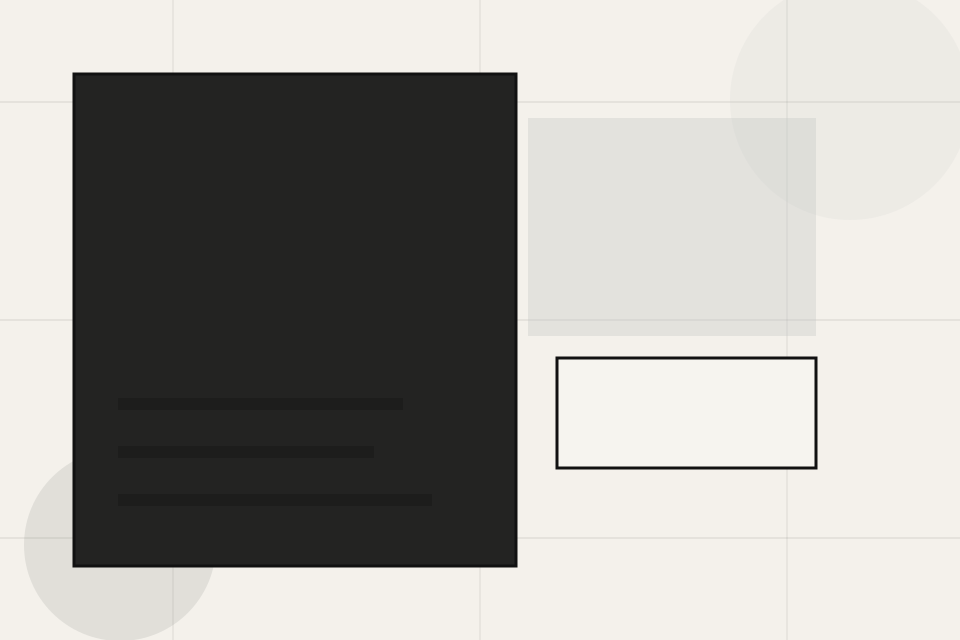
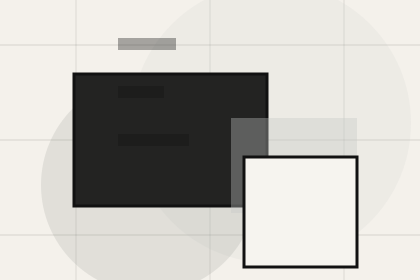
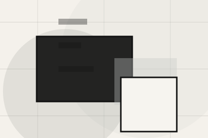
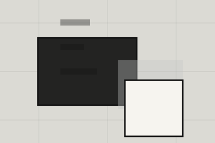

Role
The person, team, or specialist function connected to team is easy to understand.
Studio / 01
Studio opens as a clear architecture decision hub: what Craft offers, who it helps, why it matters, and which route to take first.
The first screen combines positioning, proof, primary action, and fast internal navigation, so people can act immediately or compare the rest of the studio route with context.
Minimal full-bleed project hero
Select the closest route and Craft keeps the next step, proof, and follow-up expectation aligned with taste and design authority.

Studio / 02
Philosophy adds editorial context to the studio route, using the spatial project index structure to support taste and design authority before visitors choose a next step.
Craft uses architectural index cards and focused copy to make the decision easier to scan, aligning the section with taste and design authority rather than filling space.
Explore StudioPhilosophy gives the page a specific angle instead of repeating the navigation label.
The architectural index cards show what to compare, what to avoid, and what matters most for architecture, planning & built environment visitors.
The final cue points to a useful internal route so the section keeps the journey moving.
Studio / 03
Team introduces the people, roles, or specialist credibility behind Craft so the decision feels less anonymous.
The copy ties names, roles, credentials, or availability back to the decision on the page instead of treating profiles as decorative biographies.
Explore Studio
The person, team, or specialist function connected to team is easy to understand.
Studio / 04
Credentials gives the proof layer for studio: standards, evidence, and reassurance that make the next decision feel grounded.
Instead of relying on vague claims, Craft presents visible standards, process cues, and proof artifacts that help architecture visitors judge fit.
Explore StudioVisible proof that helps visitors believe the claims behind credentials.
The quality, safety, or operating expectation this section makes explicit.
What becomes clearer before someone decides whether to discuss the project.
Studio / 05
Values adds editorial context to the studio route, using the spatial project index structure to support taste and design authority before visitors choose a next step.
Craft uses architectural index cards and focused copy to make the decision easier to scan, aligning the section with taste and design authority rather than filling space.
Explore StudioValues gives the page a specific angle instead of repeating the navigation label.
The architectural index cards show what to compare, what to avoid, and what matters most for architecture, planning & built environment visitors.
The final cue points to a useful internal route so the section keeps the journey moving.
Studio / 06
Collaborators adds editorial context to the studio route, using the spatial project index structure to support taste and design authority before visitors choose a next step.
Craft uses architectural index cards and focused copy to make the decision easier to scan, aligning the section with taste and design authority rather than filling space.
Explore StudioCollaborators gives the page a specific angle instead of repeating the navigation label.
The architectural index cards show what to compare, what to avoid, and what matters most for architecture, planning & built environment visitors.
The final cue points to a useful internal route so the section keeps the journey moving.
Studio / 07
Recognition adds editorial context to the studio route, using the spatial project index structure to support taste and design authority before visitors choose a next step.
Craft uses architectural index cards and focused copy to make the decision easier to scan, aligning the section with taste and design authority rather than filling space.
Explore StudioRecognition gives the page a specific angle instead of repeating the navigation label.
The architectural index cards show what to compare, what to avoid, and what matters most for architecture, planning & built environment visitors.
The final cue points to a useful internal route so the section keeps the journey moving.
Studio / 08
Approach adds editorial context to the studio route, using the spatial project index structure to support taste and design authority before visitors choose a next step.
Craft uses architectural index cards and focused copy to make the decision easier to scan, aligning the section with taste and design authority rather than filling space.
Explore StudioApproach gives the page a specific angle instead of repeating the navigation label.

The architectural index cards show what to compare, what to avoid, and what matters most for architecture, planning & built environment visitors.
The final cue points to a useful internal route so the section keeps the journey moving.
Studio / 09
Trust gives the proof layer for studio: standards, evidence, and reassurance that make the next decision feel grounded.
Instead of relying on vague claims, Craft presents visible standards, process cues, and proof artifacts that help architecture visitors judge fit.
Explore StudioVisible proof that helps visitors believe the claims behind trust.
The quality, safety, or operating expectation this section makes explicit.
What becomes clearer before someone decides whether to discuss the project.
Studio / 10
Craft closes the studio route with a clear action, a quick reminder of the value, and a low-friction way to discuss the project.
Visitors who are ready can use the primary action. Visitors who are still comparing can scan the section links, proof, and support routes before they discuss the project.
Discuss ProjectThe final block keeps the choice simple: act now, compare one more proof route, or send enough detail for a focused response.
Discuss Projecttaste and design authority
A spatial portfolio site with minimal chrome, full-bleed project moments, thin metadata, and studio enquiry. Studio ends with a direct path to discuss the project, plus enough context for visitors who still need to compare.

Discuss Project